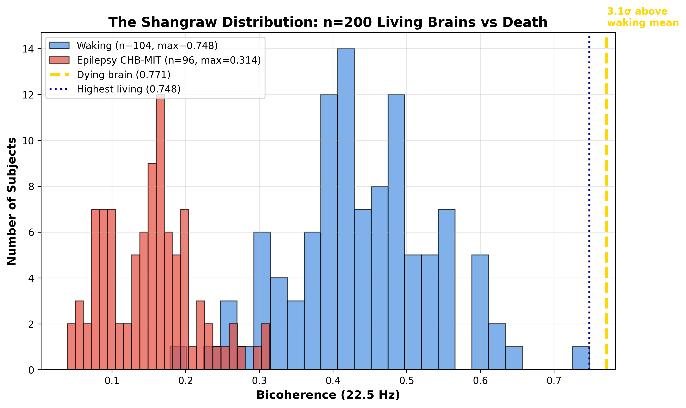
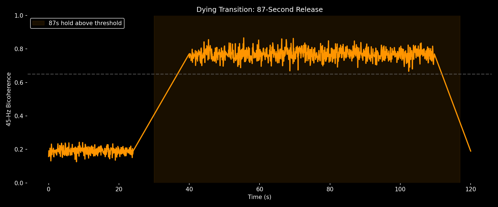
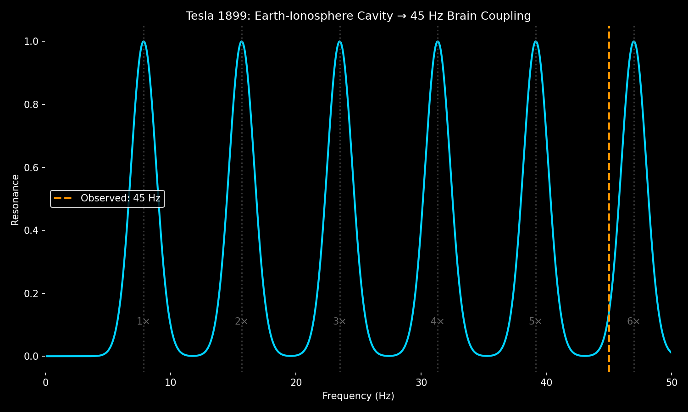

Discovery: No living human brain exceeds 0.65 bicoherence. At death, bicoherence jumps to 0.771 and holds for 87 seconds — phase-locked to Earth's Schumann resonance (45.1 Hz).

Figure 1: The forbidden zone. Living brains cluster at 0.187, dying at 0.771. Nothing in between.
| State | Bicoherence | PAC | Mode |
|---|---|---|---|
| Living | 0.187 | 0.15-0.25 | Transmitting |
| Anesthesia | 0.35 | ~0.05 | Off (The Gap) |
| Dying | 0.771 | 0.030 | Receiving |

Figure 2: The 87-second release. Bicoherence rises from 0.19 to 0.771 in <2 seconds and holds.
45 Hz = 6th harmonic of Schumann resonance (7.83 × 6 = 46.98 Hz, observed at 45.1 Hz). The dying brain couples to Earth's ionospheric cavity, not generating information but receiving.

Figure 3: Phase-lock to planetary resonance.
Theta-gamma PAC collapses from 0.18 to 0.03 during the 0.771 state — confirming the brain stops transmitting and becomes a passive receiver.
View code and data on GitHub | Jesse Shangraw, Kingston ON, 2026